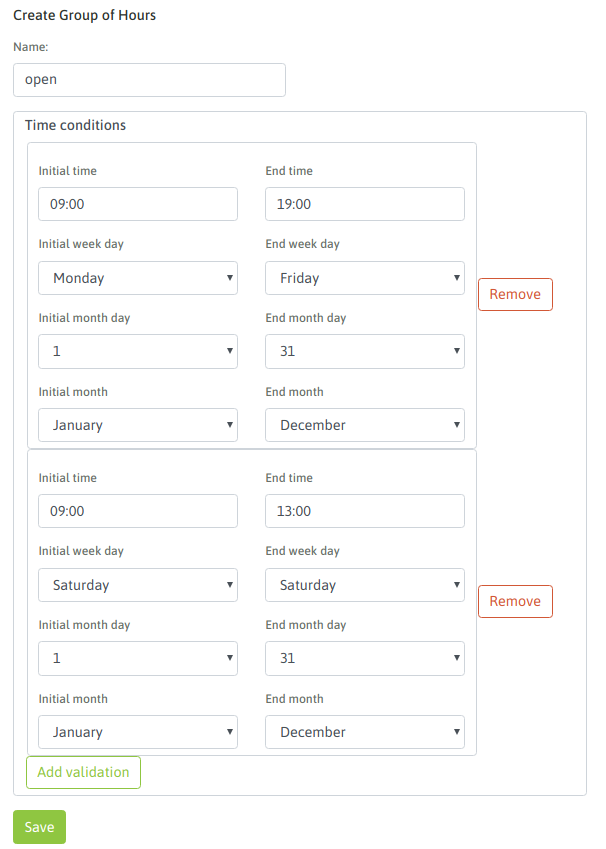
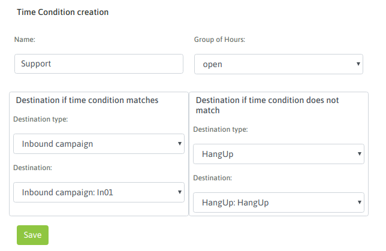

Enrutamiento condicionado por fechas y horas¶
OMniLeads permite configurar el enrutamiento de llamadas entrantes hacia diferentes destinos internos a partir de comparar la fecha/hora en que se procesa una llamada y un patrón configurado, de manera tal que se pueda planificar de antemano si una llamada debe ir hacia un destino u otro basandonos en dicha comparación.
Por ejemplo una llamada podria ir hacia una campaña entrante «en fechas y horas de atención al cliente» y hacia un IVR fuera de ese rango definido.
Cada elemento de este tipo generado, puede ser invocado por otros como el destino de:
- una ruta entrante
- una opción de un IVR
- el failover de una campaña entrante
- otro elemento similar
Figure 1: Time conditions
Para llevar a cabo este tipo de configuiraciones se disponen de dos módulos que trabajan juntos.
- Grupos horarios
Este módulo permite agrupar patrones de fechas y horas así también como fechas y horarios puntuales dentro de un elemento interno de OMniLeasds, para luego puede ser invocado por los condicionales de tiempo, módulo complementario que permite realizar un enrutamiento comparando la fecha/hora de la llamada con la de un grupo de éstos. Para definir o editar grupos de horarios, se debe acceder al punto de menú Telefonía -> Grupos horarios. Para añadir un nuevo grupo se debe presionar el botón «Agregar nuevo grupo».
La pantalla de grupos horarios se expone en la figura 2.
Figure 2: Time groups
Una vez generados los Grupos de tiempos podemos invocarlos desde el módulo complementario Condicionales de tiempos
- Validaciones de tiempo
Este módulo permite comparar la fecha y hora en el momento de procesar una llamada, con un grupo horario asignado como patrón de comparación. Luego en base a la coincidencia o no con alguna franja de fecha/hora del grupo, la llamada se envía hacia el destino positivo o negativo de la comparación.
Para generar un elemento Condicional de tiempo, se debe acceder a Telephony -> Time conditions
La pantalla de configuración es similar a la figura 3.
Figure 3: Time conditions
Finalmente tenemos disponible este elemento de enrutamiento para ser utilizado por ejemple como destino de una ruta entrante.